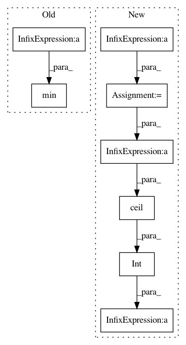

cd19f843caff39e136766a353807ab3a7d4c6a57,spynnaker/pyNN/models/spike_source/spike_source_poisson_vertex.py,SpikeSourcePoissonVertex,_write_poisson_parameters,#SpikeSourcePoissonVertex#Any#Any#Any#Any#Any#Any#Any#,315
Before Change
spec.write_value(incoming_mask)
// Write the random back off value
spec.write_value(random.randint(0, min(
self._n_poisson_machine_vertices,
MICROSECONDS_PER_SECOND // machine_time_step)))
// Write the number of microseconds between sending spikes
total_mean_rate = numpy.sum(self._rate)
After Change
spec.write_value(incoming_mask)
// Write the offset value
max_offset = (
machine_time_step * time_scale_factor) // _MAX_OFFSET_DENOMINATOR
spec.write_value(
int(math.ceil(max_offset / self._n_subvertices)) *
self._n_data_specs)
self._n_data_specs += 1
// Write the number of microseconds between sending spikes
In pattern: SUPERPATTERN
Frequency: 3
Non-data size: 8
Instances
Project Name: SpiNNakerManchester/sPyNNaker
Commit Name: cd19f843caff39e136766a353807ab3a7d4c6a57
Time: 2019-01-17
Author: Andrew.Rowley@manchester.ac.uk
File Name: spynnaker/pyNN/models/spike_source/spike_source_poisson_vertex.py
Class Name: SpikeSourcePoissonVertex
Method Name: _write_poisson_parameters
Project Name: iskandr/fancyimpute
Commit Name: ea80e4bf2033628822e2b0f92e2e373d1b3c147b
Time: 2015-12-31
Author: alex.rubinsteyn@gmail.com
File Name: fancyimpute/auto_encoder.py
Class Name: AutoEncoder
Method Name: complete
Project Name: philipperemy/keras-activations
Commit Name: 8a5a6993cec37c98e823d251febcd0b91089bd44
Time: 2019-03-17
Author: 28253514+Stochastic13@users.noreply.github.com
File Name: keract/keract.py
Class Name:
Method Name: display_heatmaps